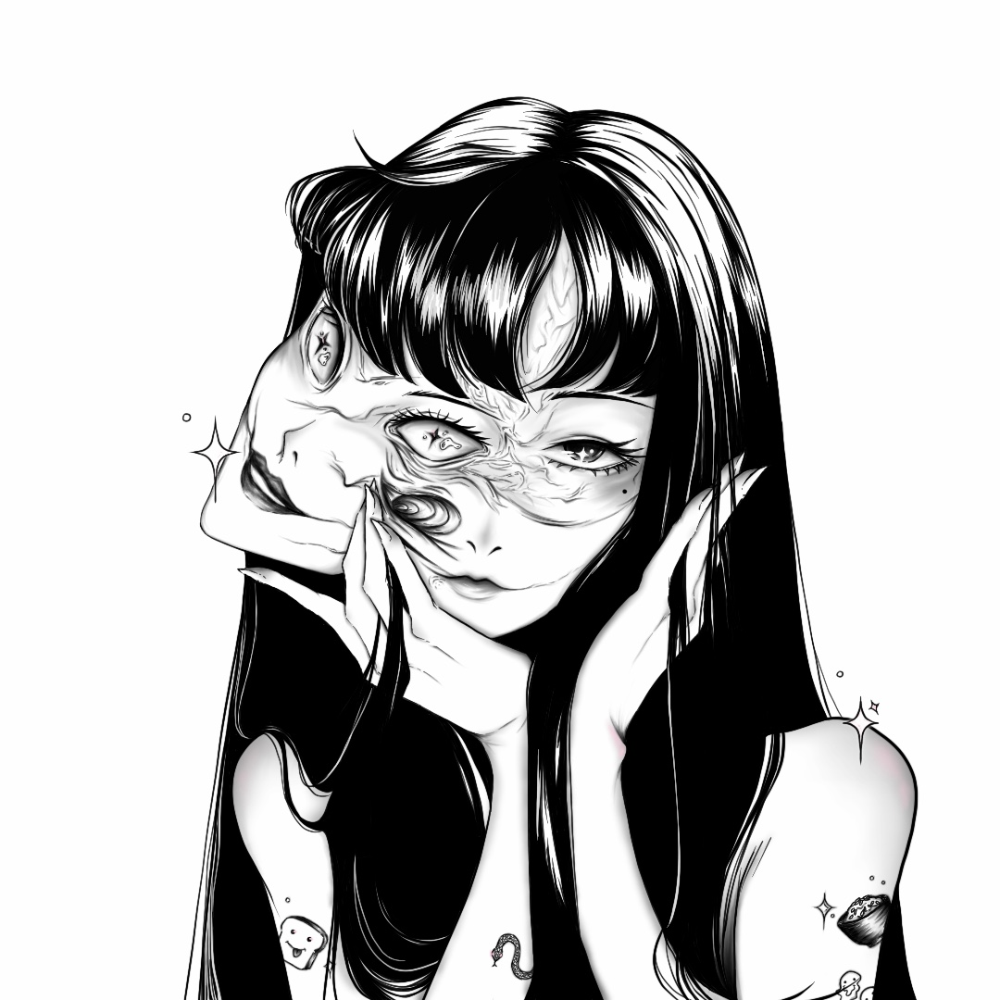
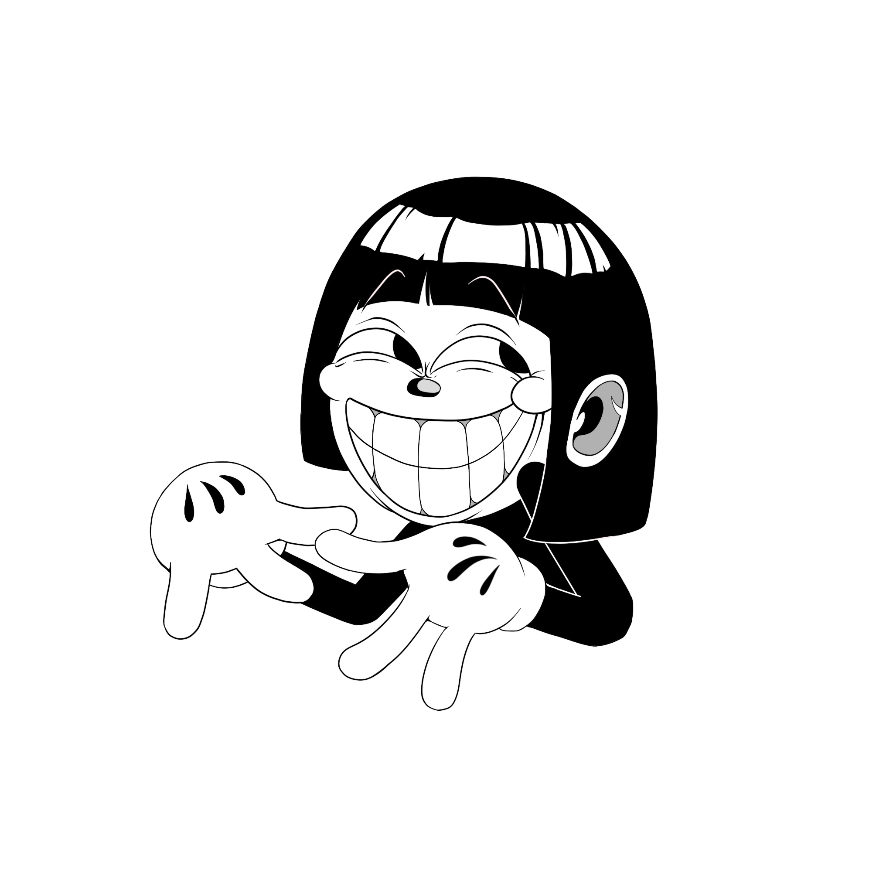
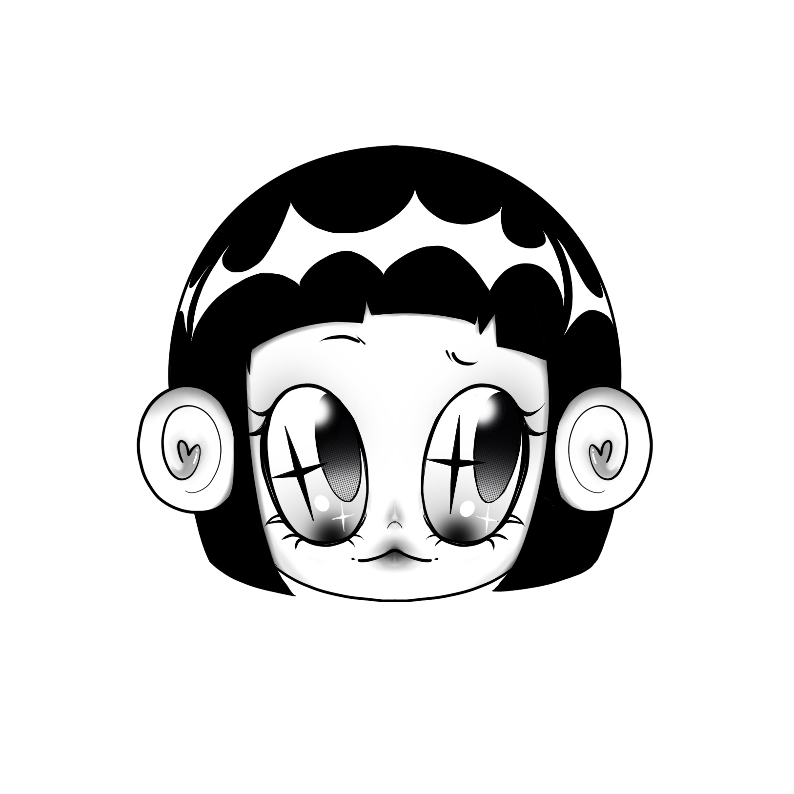
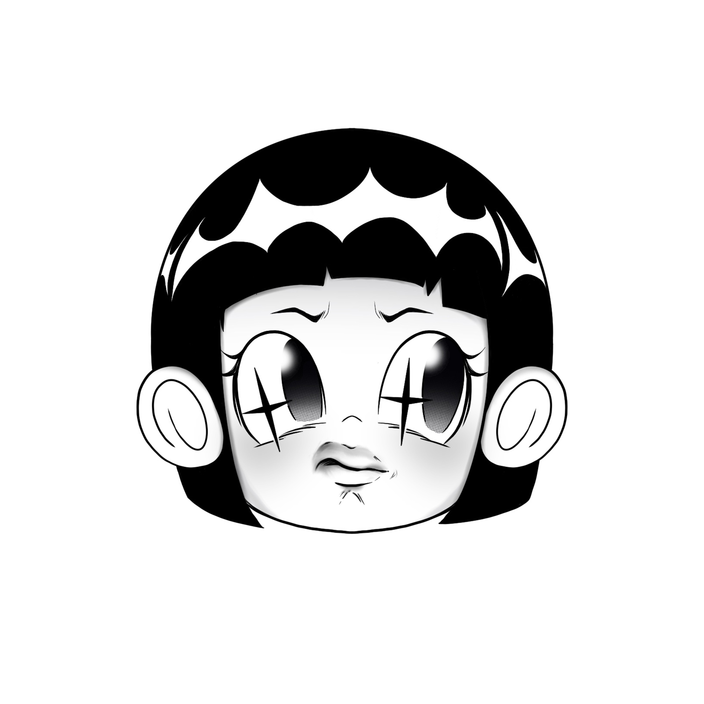
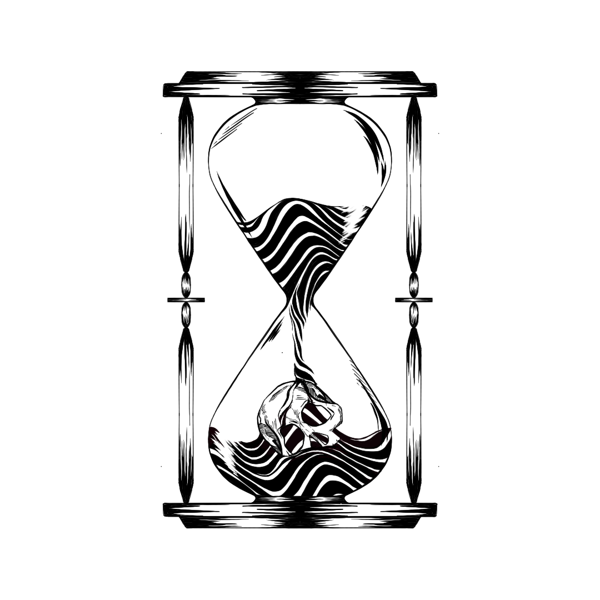
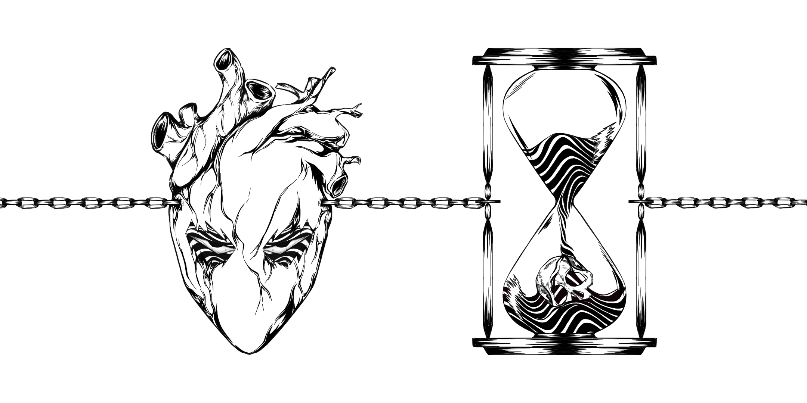
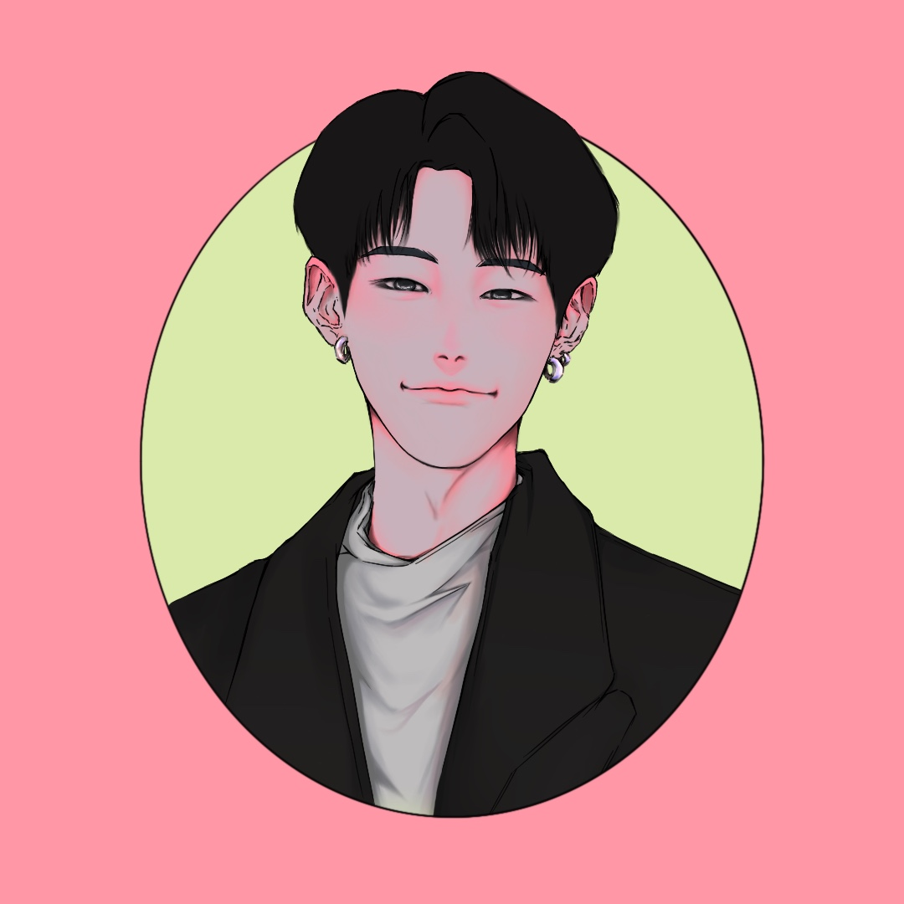
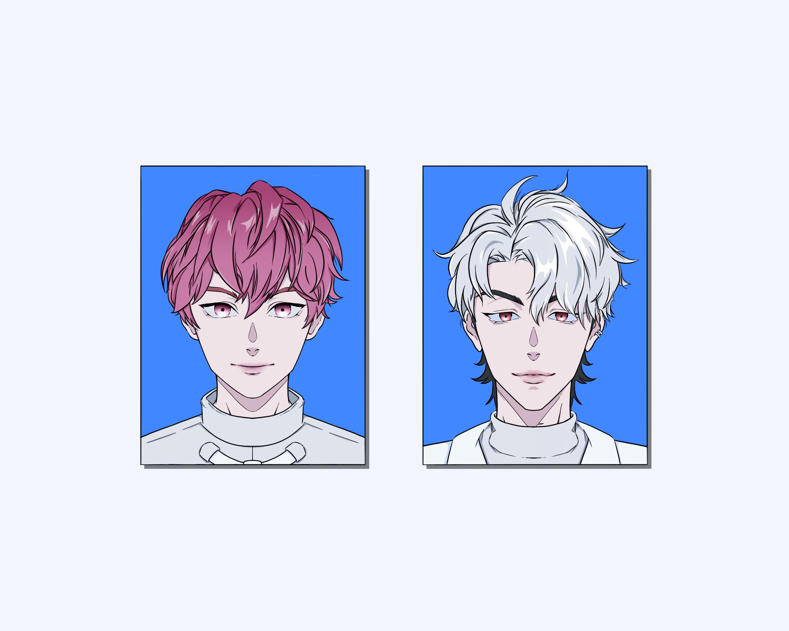

ILLUSTRATIONS
作品概要 Project Overview
- 大学在学中、コロナ禍でベトナムへ帰国していた期間に制作したイラスト作品群 A series of illustration works created during my university years while I was staying in Vietnam due to the COVID-19 pandemic
- 外出や制作活動が制限される状況の中で、時間を有効活用し、表現力向上を目的として制作 Produced with the aim of making effective use of time and improving expressive skills under restrictions on outings and creative activities
- iPadとProcreateを使用したデジタルイラスト制作に取り組んだ Focused on digital illustration created using an iPad and Procreate
- 主にモノクロの線画イラストを中心に制作 Mainly consists of monochrome line drawings
- 友人や家族のために描いたタトゥーデザインも多く含まれている Includes many tattoo designs created for friends and family
制作年月日 Production Date
2020年 〜 2023年 2020 — 2023
制作担当 Production Role
- すべてのイラスト制作を一人で担当 Handled all illustration production independently
- オンライン上のさまざまなイラスト作品を参考に、描き方や表現技法を研究 Studied drawing methods and expressive techniques by referencing a wide range of illustration works online
- 試行錯誤を重ねながら、継続的に制作を行った Continued creating works through repeated trial and error
コンセプト Concept
- アニメやレトロアートから影響を受けたビジュアル表現を中心に制作 Created visual expressions primarily influenced by anime and retro art.
- 線の表情や構成を意識した線画イラストに注力 Focused on line art, emphasizing line quality and composition.
- K-POPアイドルの写真を参考に、セミリアル調のカラーイラストにも挑戦 Experimented with semi-realistic color illustrations based on K-POP idols.
- モノクロ表現とカラー表現の両方を試しながら、表現の幅を広げることを意識 Expanded my range by exploring both monochrome and color expressions.
- 制作スタンス： Production Stance:
- 特定の完成形やスタイルを定めるのではなく Rather than defining a fixed style or final form:
- さまざまな表現方法やタッチを試す Exploring various techniques and touches.
- 自分自身の作風を模索する Searching for my own unique artistic style.
- 学習と実験を重視した制作期間として位置付けている Positioned as a period dedicated to learning and experimentation.
工夫点 Reflections
- オリジナルの作風を確立することの難しさを実感 Gained a deep realization of the challenges involved in establishing an original artistic style.
- 学習のために参考にした作品の影響を強く受けてしまう場面が多くあった Recognized instances where my work was heavily influenced by the reference pieces used for study.
- その反省から、今後は以下を意識して制作を行いたいと考えている Based on these reflections, I aim to focus on the following moving forward:
- 既存作品の模写だけに頼らない Moving beyond reliance on mimicking existing works.
- オリジナルキャラクターや独自のモチーフの制作 Creating original characters and unique recurring motifs.
- 自分らしい表現をより深く追求する Deeply pursuing a form of expression that is uniquely my own.
制作環境と使用言語 Tools & Environment
Procreate Procreate (iPad)
×